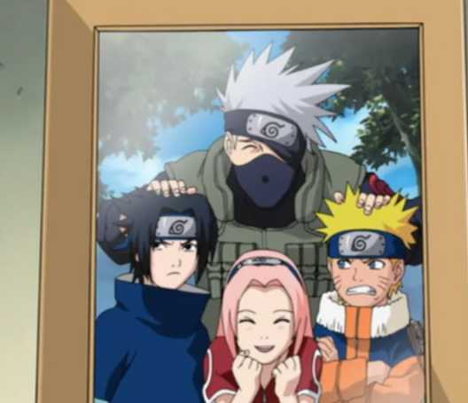

Меня зовут Учиха Саске. Есть много вещей, которые я не люблю, но нет ничего такого, что мне не нравится.
Врядли это можно назвать мечтой, но я собираюсь возродить мой клан...
|
 | |
Это мой учитель Хатаке Какаши. Он часто опаздывает и всегда ходит с книгой. |
Это моя команда номер 7. Помимо меня в ней Наруто и Сакура, а также наш учитель Какаши |